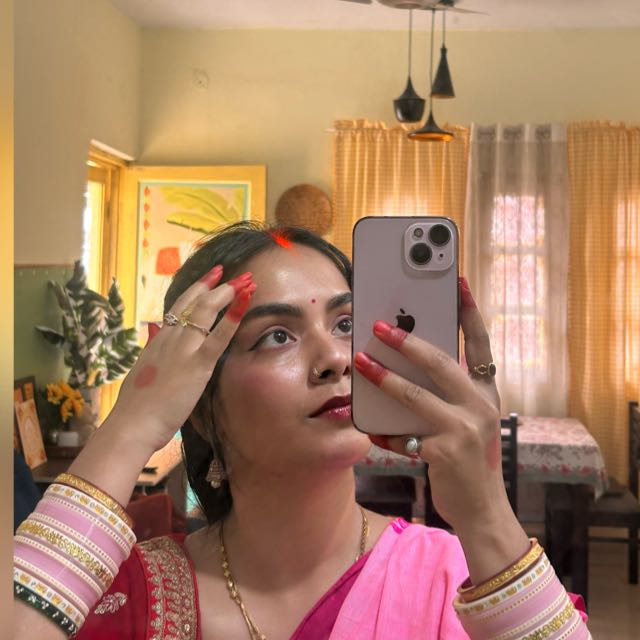

The Artist
A slow hand, an old language

I am a painter working between the folk traditions of India and the quiet of a small home studio.
My work begins with the line. A bamboo pen, a brush bound from squirrel hair or a scrap of cotton — the tool decides the rhythm before I do. From there come the motifs that have travelled across generations: the double fish of Mithila, the dancing circles of Warli, the peacock and the lotus that appear again and again in Kalamkari and Pichwai cloth.
I make my own colours wherever I can — lamp soot, indigo, pomegranate rind, iron rust, madder root. It makes the work unpredictable, and it makes the work honest. Nothing is repeated exactly, because nothing in nature is.
Alongside painting I make short films about the process: boiling dye, straining pigment, the birds outside the window. They are as much a part of the collection as the canvases are.
- Madhubani & Mithila line work
- Warli narrative painting
- Kalamkari pen & natural dye
- Pichwai mineral pigment
- Gond dot-and-dash patterning
All purchases happen on Instagram
Prices, availability, commissions and shipping are handled entirely through direct messages. Send me a note — I answer every one.
Message @your.art.corner.6